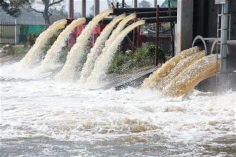

Pollution : A Major Problem

Pollution is a known term to us. It is related to the contamination of the natural air we breathe, the water we drink, and the land we live on. The world is rapidly developing which makes our lives much easier to live, but at the same time, we are destroying our natural resources. Pollution is mainly caused due to human activities such as globalization and industrialization. So, to diminish the effect of air and water pollution some previous som,e preventive measures have to be taken.
Pollution is the introduction of contaminants into the natural environment that cause adverse change. Pollution can cause harm to chemical substances or energy, such as noise, heat, or light. Pollutants, the components of pollution, can be either foreign substances/energies or naturally occurring contaminants.
Pollution is often classed as a point source or nonpoint source of pollution. Pollution is when something is added to the environment that is harmful or poisonous to living things.
Causes of Pollution
The causes of pollution are not just limited to fossil fuels and carbon emissions. There are many other types of pollution in bodies of water and soil through improper disposal practices and agricultural activities, and noise and light pollution created in cities and urbanization as a result of population growth.
Types of Pollution
There are mainly four types of pollution :
- Air Pollution
- Water Pollution
- Noise Pollution
- Soil Pollution
Air Pollution
 Earlier the air we breathe in used to be pure and fresh. But, due to increasing industrialization and the concentration of poisonous gases in the environment, the air is getting more and more toxic day by day. also, these gases are the cause of many respiratory and other diseases. Moreover, rapidly increasing human activities like the burning of fossil fuels, and deforestation is the major cause of aisr pollution.
The air over large cities is heavily contaminated with harmful gases like sulfur dioxide, nitrogen oxide, carbon monoxide, smoke, and dust, etc. The contamination of air with harmful gases(like sulfur dioxide, nitrogen oxides, carbon monoxide), smoke and dust etc., is called air pollution. A substance becomes an air pollutant when it is present in air in such concentration which is high enough to hurt living or non-living things.
Earlier the air we breathe in used to be pure and fresh. But, due to increasing industrialization and the concentration of poisonous gases in the environment, the air is getting more and more toxic day by day. also, these gases are the cause of many respiratory and other diseases. Moreover, rapidly increasing human activities like the burning of fossil fuels, and deforestation is the major cause of aisr pollution.
The air over large cities is heavily contaminated with harmful gases like sulfur dioxide, nitrogen oxide, carbon monoxide, smoke, and dust, etc. The contamination of air with harmful gases(like sulfur dioxide, nitrogen oxides, carbon monoxide), smoke and dust etc., is called air pollution. A substance becomes an air pollutant when it is present in air in such concentration which is high enough to hurt living or non-living things.
Sources of Air Pollution :-
Most of the air pollution is caused by the burning of fuels such as wood, cow-dung cakes, coal, kerosene, petrol and diesel in homes, motor vehicles(automobiles), factories, etc. The various sources of air pollution are given below :
- Smoke emitted from homes by the burning of fuels like wood, cow-dung cakes, kerosene, and coal causes air pollution.
- Smoke Emitted by factories and thermal power plants due to the burning of coal causes air pollution.
- Stone crushers, cement factories, asbestos factories, and lead processing units cause air pollution.
- Use of CFCs in refrigeration, air conditioning, and aerosol sprays causes air pollution.
- Smoking causes air pollution.
All the above of air pollution are man-made sources of air pollution in which pollutants are added to air by various human activities.
Controlling Air Pollution :-
The air over most of the cities of our country is highly polluted. This polluted air is damaging our health and property gradually. So, air pollution must be controlled as soon as possible. Some of the ways of controlling are given below :
- The air pollution can be controlled by using smokeless fuels like LPG, PNG, and Bio-gas.
- The air pollution can be reduced by using CNG as a fuel in place of petrol and diesel. Cng is a very clean fuel that does not pollute the air.
- The air pollution from factories, thermal power plants, oil refineries, and chemical industries can be controlled by washing down their smoke and waste gases with jets of water.
- The air pollution can be controlled by using non-polluting sources of energy like solar energy, wind energy and hydro energy for generating electricity.
Water Pollution
 Most of the water which we use comes from the rivers and lakes. Every day many unwanted and harmful substances are thrown(or discharged)into the rivers and lakes. This makes the water of rivers and lakes impure(or contaminated). And we say that the water has been polluted. The contamination of water of rivers, lakes ponds, etc., with unwanted and harmful substances is called water pollution. Water is said to be polluted when it becomes unfit for drinking and bathing. The unwanted and harmful substances that make the water impure(or contaminated) are called water pollutants. The major pollutants which cause water pollution are ; Sewage, Fertiliser, Pesticides and Industrial wastes. All these water pollutants are harmful and dangerous to human beings, animals and plants. some pollutants can even cause death. Hot water from power plants and industries is discharged into the river water. This rise in the temperature of river water hurts the animals and plants living in it.
Most of the water which we use comes from the rivers and lakes. Every day many unwanted and harmful substances are thrown(or discharged)into the rivers and lakes. This makes the water of rivers and lakes impure(or contaminated). And we say that the water has been polluted. The contamination of water of rivers, lakes ponds, etc., with unwanted and harmful substances is called water pollution. Water is said to be polluted when it becomes unfit for drinking and bathing. The unwanted and harmful substances that make the water impure(or contaminated) are called water pollutants. The major pollutants which cause water pollution are ; Sewage, Fertiliser, Pesticides and Industrial wastes. All these water pollutants are harmful and dangerous to human beings, animals and plants. some pollutants can even cause death. Hot water from power plants and industries is discharged into the river water. This rise in the temperature of river water hurts the animals and plants living in it.
Sources of Water Pollution :-
The water of rivers, lakes, and ponds gets polluted by various human activities. The major sources of water pollution are given below :

- Dumping of untreated sewage into rivers causes water pollution.
- Use of fertilizers in agriculture causes water pollution.
- Use of pesticides in agriculture causes water pollution.
- Discharging of untreated industrial wastes into rivers and lakes causes water pollution.
All the above water pollution are man-made sources of water pollution in which pollutants are added to water by various human activities.
Controlling Water Pollution :-
The water of most of the rivers and lakes of our country is highly polluted. All of us should make efforts to reduce the pollution of water sources like rivers and lakes. The various ways of controlling water pollution are as follows:
- Sewage should be treated properly at sewage treatment plants to make it harmless before discharging it into nearby rivers.
- Farmers should use correct amounts of fertilizers and pesticides in the fields so that excessive amounts of these harmful agricultural chemicals are not washed into rivers.
- All industries should treat the toxic wastes produced by them suitably to make them harmless before discharging them into the rivers.
- Water pollution prohibition laws which exist for the industries producing toxic chemical wastes should be implemented strictly by the concerned Authorities.
- People should be made aware of the harmful effects of water pollution so that they cooperate and help in preventing it.